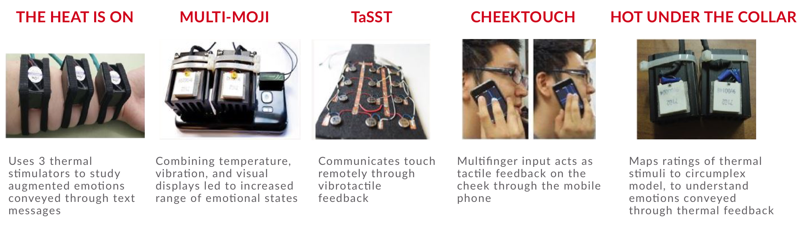

TACTIBITS: SOCIAL TOUCH TECHNOLOGY
Modules that simulate social touch for human-machine and human-human interactions via machines.

Overview
Touch can serve to not only facilitate interaction through tactile feedback but can also convey emotions and strengthen emotional ties between individuals. Tactibits (Tactile bits) are a step towards conveying emotions through touch during interaction with gadgets such as mobile phones, laptops, tactile interfaces, etc.
Research Question
How is emotional perception affected when vibrotactile touch patterns are combined with the thermal modality?
Objective
Design and develop a novel human-machine interaction technique and to design a user experiment to test its effectiveness.
Process

My Role
Product Designer, Developer
I worked on this project independently while being advised by two supervisors.
Tools
Pen & Paper
Arduino & ATtiny
Unity
Duration
4 Months
Aug 2017 - Dec 2017
Supervisors
Dr. Eric Lecolinet
Marc Teyssier
Literature Review
The sense of touch has been shown to trigger emotional attachment and to communicate physical connection. Social touch can be defined as touch occuring between individuals in a co-located space. Social Touch Technology is the use of haptic technology for augmenting experiences of social touch. This is underexplored in interactive systems which mostly rely on audio and visual modalities.
Competitive Analysis

Prototyping
Each Tactibit has a coin-shaped vibration motor to simulate vibration, a peltier to simulate the temperature of touch, an h-bridge to drive direction of current, and an ATtiny84 microcontroller to control all these components. I2C communication was setup between an Arduino as a master and ATtiny as slaves.


Tactibit's back view
Tactibit's front view
Experiment Design
I developed a user interface to test Tactibits with 12 participants. Tactibits can be arranged on the body to form any touch pattern. Three patterns- stroke, poke and hit were simulated for the experiment. One can set the temperature and vibration values, and customize touch patterns. Participants rate how pleasant and excited they feel after every trial of patterns is delivered to their forearms.
Because of the small duration of my internship (4 months), I could not conduct the user experiment. However, this project will be continued further by my supervisors.
Applications
- Tactibits can serve to enhance user experience, convey affective information, strengthen sense of presence, etc.
- They also offer a promising way of providing empathetic interfaces to health assistive technologies.
- On the back of mobile phones, Tactibits would be a medium of emotion communication when people talk on the phone.
- Tactibits could also be used to study how different parts of the human body perceive simulated touch patterns.
Learnings
I became acquainted with new research methodologies, learnt to work in diverse teams and developed a habit of actively noting down project ideas and implementing them in my free time. I was guided by amazing mentors, who taught me a great deal about the HCI community, as well as designing and building great products. I was given a PhD opportunity at Telecom ParisTech towards the completion of my internship.